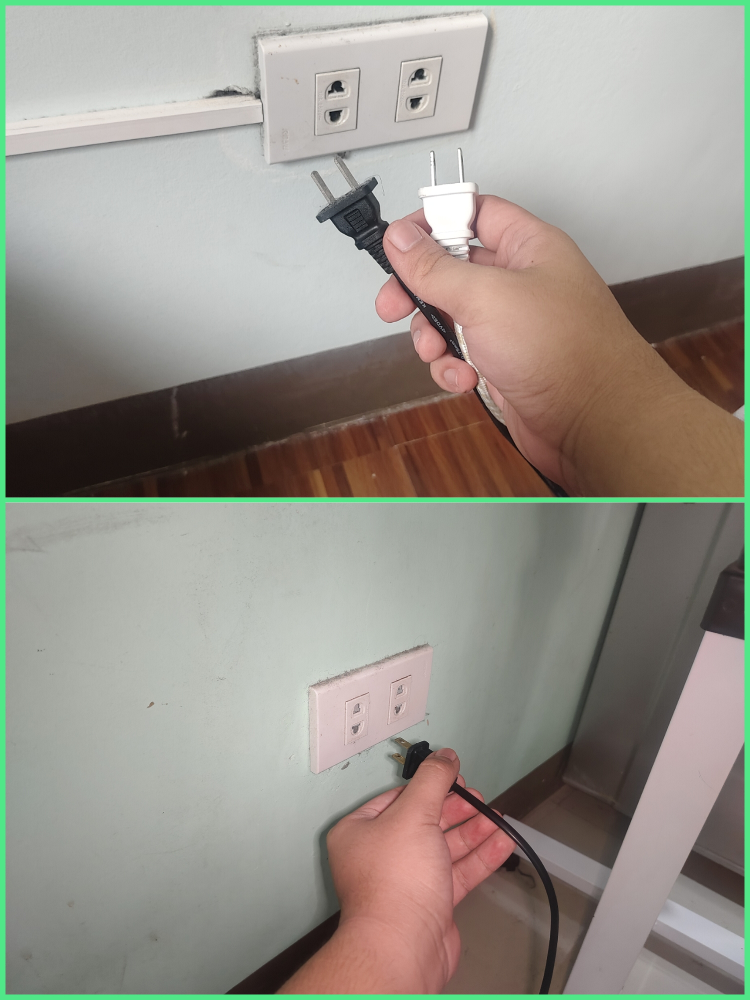
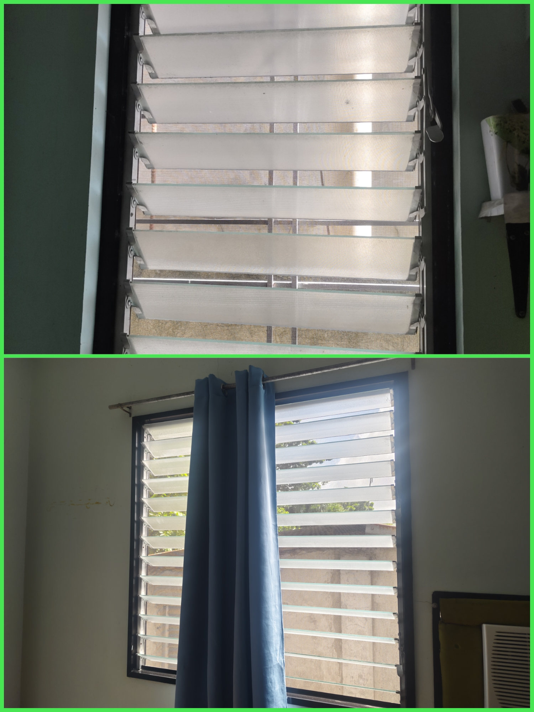
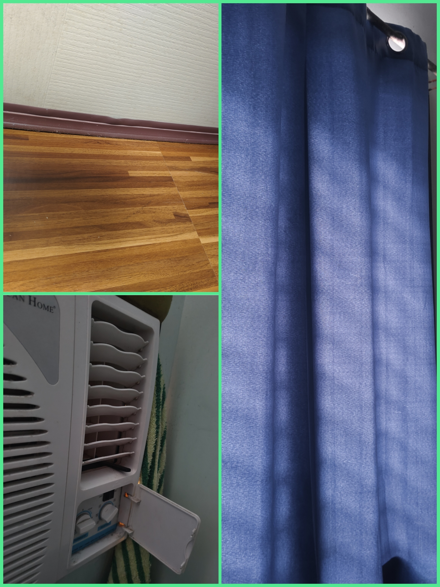
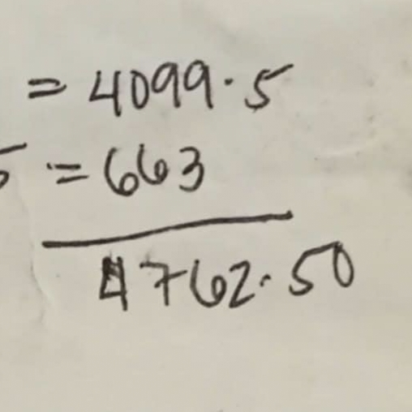
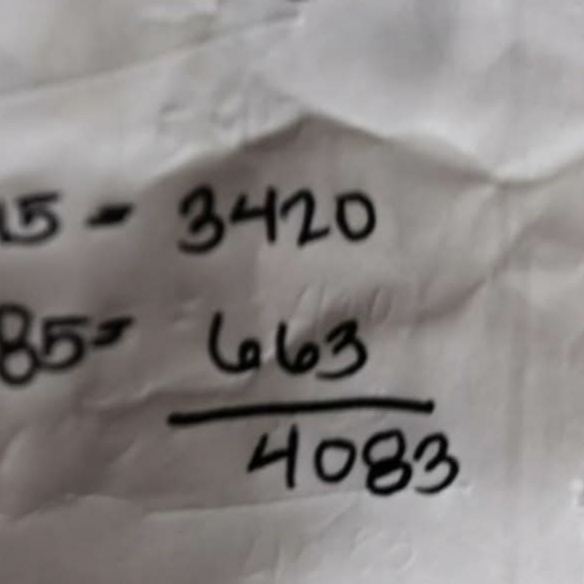

Environmental Concern
At home, unnecessary daily electricity consumption contributes to higher household carbon emissions and strain on the local power grid. Specifically, I identified three common habits causing energy waste: leaving chargers and appliances plugged in when idle (phantom load), turning on electric lights during bright daytime hours, and running the air-conditioning unit inefficiently while cool air escapes through gaps.
Proposed Action
Under Project SAVE ENERGY, I planned a zero-cost, sustainable household conservation routine over a half billing cycle. My goal was to cut avoidable kilowatt-hour (kWh) usage through three practical habits: unplugging all unused electronics, maximizing natural daylight and cross-ventilation, and optimizing air-conditioning airflow and room insulation.
Implementation
To turn this plan into a consistent daily routine at home, I carried out the following three energy-saving practices:
1. Unplugging Unused Electronics
After using desktop computers, phone chargers, electric fans, and kitchen appliances, I unplugged them directly from the wall outlets or switched off power strips to eliminate standby ("vampire") power draw.
2. Natural Light & Ventilation
Instead of switching on indoor bulbs and fans during the morning and afternoon, I opened curtains and windows to let natural sunlight light the area and allow fresh breeze to cool the room.
3. Optimized Air-Conditioning
Whenever the air-conditioner was needed, I sealed door and window gaps with heavy curtains to trap cool air inside, set the thermostat to low cool, and adjust the louvers upward for optimal circulation(there is a clothing rack blocking the center).
Photo Documentation
Click any photo below to inspect it in full size.



Results & Environmental Impact
By consistently practicing these three conservation habits, our household measurably reduced our monthly kilowatt-hour (kWh) consumption. Lowering electricity demand directly reduces fossil-fuel power generation and greenhouse gas emissions.


Personal Reflection
As an Information Technology student who spends hours every day working on computers and electronic devices, I used to take electricity for granted, assuming that individual habits at home were too small to make a noticeable environmental difference. Through Project SAVE ENERGY, seeing the actual drop in kilowatt-hours between our before and after electric bills proved that small, disciplined adjustments add up to measurable results.
This experience has broaden my perspective on environmental stewardship: sustainability does not always require expensive technology or large-scale campaigns. Being a responsible future IT professional and NSTP steward starts with mindful resource management in my own workspace and home, and encouraging my family to keep practicing these habits long after this task is submitted.